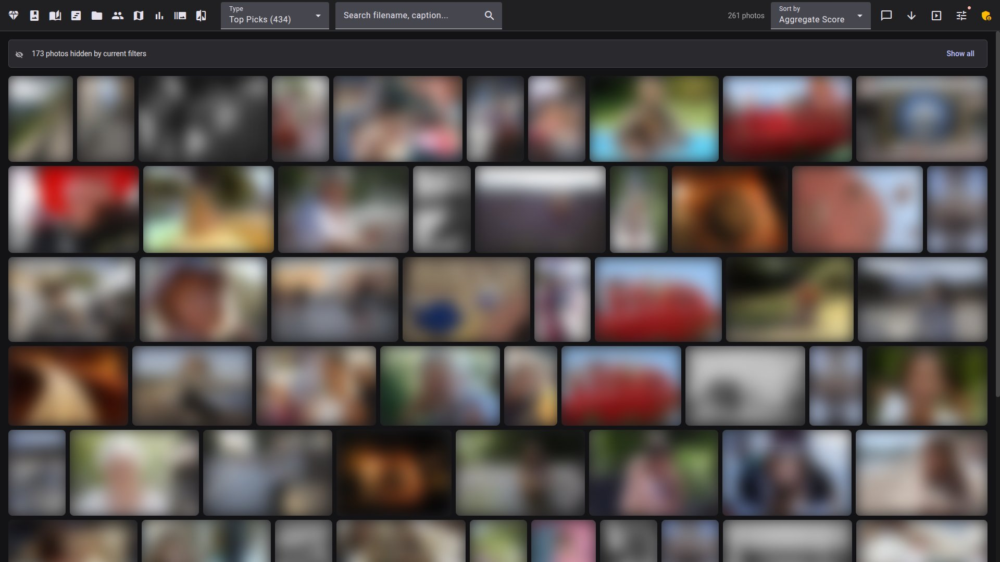

Facet scores every image across 9 dimensions, culls bursts, blinks and near-duplicates, and serves a fast web gallery with face recognition and semantic search. No cloud, no accounts, no subscriptions.


A private AI gallery to browse and explore your whole library — and a culling workflow to keep only the shots that shine.
Everything Immich and PhotoPrism give you for organizing — plus quality scoring and ranking they don't.
A free, local alternative to Aftershoot, Narrative and FilterPixel — with tunable scoring that learns your taste.


An ensemble of vision models, running locally — GPU optional.
TOPIQ (0.93 SRCC), IAA merit & LIQE distortion diagnosis.
SigLIP 2 / CLIP embeddings power semantic and similarity search.
SAMP-Net detects 14 patterns — rule of thirds, golden ratio, more.
InsightFace detection, 106-point landmarks, blink & recognition.
CPU-only works; a GPU (16 GB / 24 GB) unlocks the strongest models.
Reads/writes XMP sidecars for Lightroom, darktable, digiKam & Immich.
Runs in CPU mode — no GPU needed to browse and serve an existing library.
# Docker (recommended) docker compose up # then open http://localhost:5000 # or manual install git clone https://github.com/ncoevoet/facet.git && cd facet bash install.sh # auto-detects GPU, creates venv, installs everything python facet.py /photos # score photos python viewer.py # start the web viewer